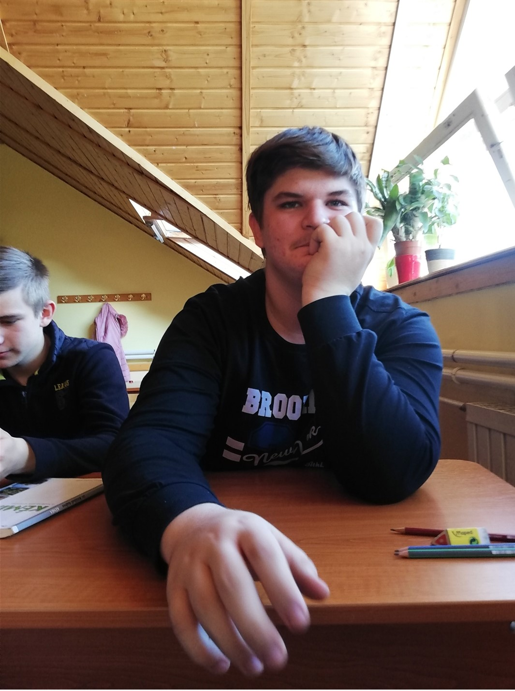
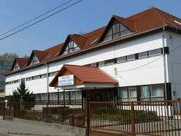

Ez az oldal alra szolgál, hogy meg is mertessem vetetek a falut a hol élek.
Herencsény az őskor óta lakott hely. Írott források 1322-ben említik először, majd az 1423-as dokumentumban az áll, hogy az esztergomi érsek a korábbi román stílusú templomot - valószínűleg a rotundát - kibővítette. Később a falunak több birtokosa volt. A török dúlás után ezek a birtokosok kisebb önálló településeket hoztak létre. Ilyen Vajdafalu, a Róth család telepítése, ilyen a Váras nevű településrész, amit a Ráday család szervezett, s amely később a „Kukorica Váras” nevet kapta a falu lakóitól, s ilyen a Gándor nevű falurész, melyet a Wattay család telepített be. A legrégebbi két településrész a Tiszttartósor és a Szemetszög. A település része Haraszti Puszta, amit az arra élők Harasztinak neveznek. Ezen a településrészen található a Haraszti pusztai templom, amit Török templomnak neveznek.
A falu már az 1500-as években is foglalkozott szőlőtermesztéssel a búzatermesztés mellett. A környék tölgyeseiben makkoltatták a falu kondáját. A disznómakkos erdők a sertéstartásnak kedveztek. Az 1848-as jobbágyfelszabadítás után a földek fölaprózódtak, a falu lakosságának egy része cselédnek szegődött, napszámba járt, később pedig a környékbeli szénbányában talált munkát és megélhetést. A 20. század közepén, a 2. világháború után, termelőszövetkezet alakult. A rendszerváltás után pedig a kárpótlás nyomán elaprózott földeken kft.-k gazdálkodnak. A modern kori kenyérkereset egyik forrása a turizmus. A megalakult Palóc Út Szövetség ebben is segíti a település lakóit.
Ismét előkerültek a népviseletek és az asszonyok egymás falvaiba járnak palóc díszben a búcsúba. A község határában fölállított Palócok Vigyázó Keresztje egy kis központtá tette a községet a palócok körében.
A 21. században föllendült falusi turizmust a községben található népi építészeti emlékek is segítik. A község legnagyobb nevezetessége, kiemelkedő építészeti jelentőségű műemléke azonban a rotundából bővített katolikus templom. A mai templomnak a szentélye az egykori, román kori körtemplom, amelyet a 14. században építtetett ki a falu akkori földesura, az esztergomi érsek. A templom tornya későbbi építésű, a 18. században készült el. Ma pompásan fölújítva várja a látogatókat.
Szeretek élni, mert sok mindent meg ismerek ami érdekel.
Ez az oldal alra szolgál, hogy megmutasam azt ami éltet engem.

2003-ban szölettem Herencsényi lakos vagyok. Amióta az eszemet tudom a faluban élek és egy dolog kezdett el érdekelni.
A mezőgazdaság eddig is imádtam nézni a gépeket ahogyan dolgoznak a földeken, de a mai napokban már kisegítőként dolgozom a kft-ben a suli mellett.
A suliban az informatikát tanulom mert az a másik szenvedéjem.
Már szinte a gazdaság a hobbimá vált már többet tudokróla mint aki benne dolgozik.
Az informatikát azért választottam mert ezzel gyorsan sok pénzt keresni és ha felnövök szeretnék válalatot nyitni.
Szeretek élni, mert sokat szeretek tanulni főleg azon a téren ami érdekel.
Ez az oldal alra szolgál, hogy megmutasam azt ami érdekel engem és foglalkozom vele.

A sulival úgy vagyok mint a legtöbb gyerek minek van, meg hogy ez csak idő pocsékolásnak tűnik, de ez nem így van ahoz legyen valamilyen szakod nagyon sokat kell tanulnod ahoz hogy remek szakember legyél.
A tanulásra annyi időt fordítanák mint a hobbimra kitűnő tanuló lehetnék, de nem eszt teszem ezért nem a legjobbak ajegyeim.
Jó tanács fogadd meg tanulj amíg csak lehet.